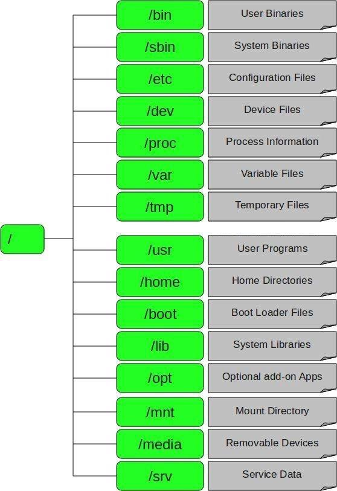

Notes & Tips
OS
- In Unix, what is a daemon?
-
- A daemon is a long-running background process that answers requests for services.
The term originated with Unix, but most operating systems use daemons in some form or another.
In Unix, the names of daemons conventionally end in "d".
Some examples include inetd, httpd, nfsd, sshd, named, and lpd.
- System directories
-

- Use public key authentication to access remote server
-
- Generating RSA Keys:
ssh-keygen -t rsa
- Transfer Client Key to Host:
ssh-copy-id username@hostname
- How To Enable EPEL Repository in RHEL/CentOS 7/6
-
- RHEL/CentOS 7 64 Bit
# wget http://dl.fedoraproject.org/pub/epel/epel-release-latest-7.noarch.rpm# rpm -ivh epel-release-latest-7.noarch.rpm
- RHEL/CentOS 6 64 Bit
# wget http://dl.fedoraproject.org/pub/epel/6/x86_64/epel-release-6-8.noarch.rpm# rpm -ivh epel-release-6-8.noarch.rpm
Docker
- What is the difference between the
COPY and ADD commands in a Dockerfile?
-
- The both commands will copy new files from
<src> and add them to the container's filesystem at path <dest>
- The major difference is that
ADD can do more than COPY:
ADD allows <src> to be a URL- If the
<src> parameter of ADD is an archive in a recognised compression format, it will be unpacked
- Shell and Exec forms
-
- Shell form:
<instruction> <command>
- When instruction is executed in shell form it calls
/bin/sh -c <command> under the hood and normal shell processing happens
- Exec form:
<instruction> ["executable", "param1", "param2", ...]
- When instruction is executed in exec form it calls executable directly, and shell processing does not happen
- Detail: http://goinbigdata.com/docker-run-vs-cmd-vs-entrypoint/
- CMD vs ENTRYPOINT
-
- CMD instruction allows you to set a default command, which will be executed only when you run container without specifying a command.
If Docker container runs with a command, the default command will be ignored.
If Dockerfile has more than one CMD instruction, all but last CMD instructions are ignored.
- ENTRYPOINT instruction allows you to configure a container that will run as an executable.
It looks similar to CMD, because it also allows you to specify a command with parameters.
The difference is ENTRYPOINT command and parameters are not ignored when Docker container runs with command line parameters.
PHP
Apache
- What is Apache (internal dummy connection) in httpd access log
-
- When the Apache HTTP server manages its child processes, it needs a way to wake up processes that are listening for new connections.
To do this, it sends a simple HTTP request back to itself. This request will appear in the access_log file with the remote address set to the loop-back interface (typically 127.0.0.1 or ::1 if IPv6 is configured).
If you log the User-Agent string (as in the combined log format), you will see the server signature followed by "(internal dummy connection)" on non-SSL servers.
- These requests may hit a heavy-weight dynamic web page and cause unnecessary load on the server.
- You can avoid this by using mod_rewrite to respond with a redirect when accessed with that specific User-Agent or IP address.
- Related: https://wiki.apache.org/httpd/InternalDummyConnection
Git
- Remove git config info
-
git config --global --unset-all user.namegit config --global --unset-all user.email
Composer
- Should composer.lock be committed to version control?
-
- composer.lock file stores information about your dependencies and about the dependencies of your dependencies
- Because your dependencies have their own dependencies, and their configuration might be specified in a format that it allows updates to subversions, or maybe even entire versions.
So, having your composer.lock file in the version system will store the exact version of this sub-dependencies, when you and your teammate does a composer install you both will get the same versions.
- Run
composer update to update version of the dependencies
Ansible
- What’s an ad-hoc command?
-
- An ad-hoc command is something that you might type in to do something really quick, but don’t want to save for later.
Other
- MediaInfo
-
- A convenient unified display of the most relevant technical and tag data for video and audio files
- Install and usage in MacOS
- What is POSIX?
-
- Short for "Portable Operating System Interface for uni-X", POSIX is a set of standards codified by the IEEE and issued by ANSI and ISO.
The goal of POSIX is to ease the task of cross-platform software development by establishing a set of guidelines for operating system vendors to follow.
- Related: https://kb.iu.edu/d/agjv